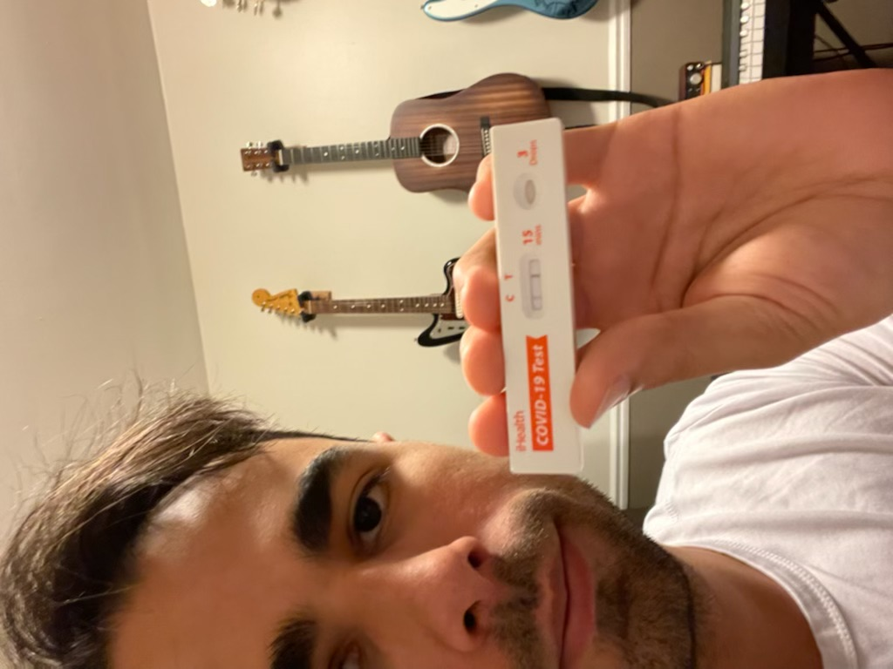

Meet the Band!
Here's a bit about each memeber of the group. If you want to know more or follow any of us on Instagram, click on any member's picture (except Alex) to give us a follow!
Alex is the lead guitar player in the band. He loves classic rock,
cars, and has quite the collection of vintage amps!
|
|
Tieler is the drummer and half of the rhythm section of the group.
He also has written two of our bands songs!
|
|
|  |
Johnny's the lead singer and rhythm guitar player of the band. He
also is a Music Teacher and is a contributing songwriter.
|
Ethan is the bass player and main songwriter in the band. He is
also currently a Real Estate Agent and working on getting his
Associate Degree in Software Engineering.
|